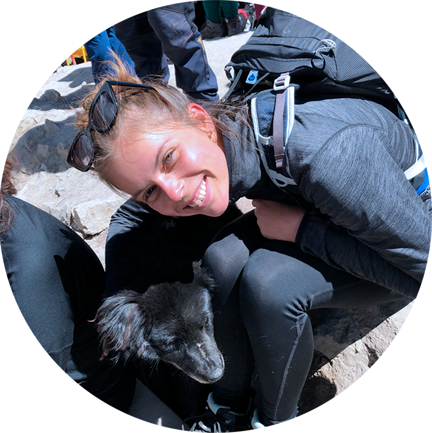
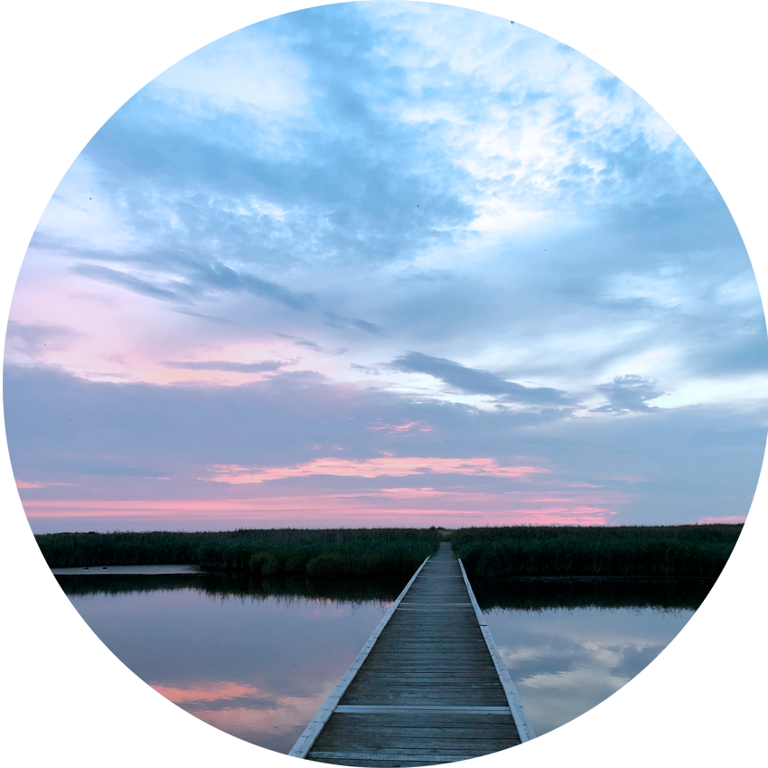

OM MIG
Lær mig at kende
Mit navn er Nanna Hjort Elowsson, jeg er 23 år gammel og studerer Multimedie design på KEA - Københavns Erhvervsakademi. Jeg har tidligere på henholdsvis efterskole og gymnasium haft fagene kunstt, foto og design. Jeg har valgt denne uddannelse med interesse for at udvikle mig og blive endnu dygtigere indenfor grafisk design, kode og visuel kommunikation.
Print cv

Interesser
Jeg holder af at lytte til musik, dyrke sport og yoga. Jeg elsker at holde mig igang og udfolde mig kreativt og fysisk.

Foto
Foto har altid været en passion der har ligget mig nært. Jeg fotografere primært natur.

Design
I mange år har design og tegning været en stor interesse for mig. Jeg har haft design og kunst på tidligere uddannelser.

Medie
Mediedesign er en ny intereesse jeg er begyndt at dyrkere mere de sidste par år. Jeg elsker at bruge programmerne Illustrator og After Effects.
Kort om mig
At udfolde mig fysisk og kreativt er vigtige ting for mig. Jeg ønsker at dyrke min kreative side endnu mere i fremtiden. Jeg holder af at være i naturen, trække vejret og nyde roligheden og stilheden. Jeg brænder for indretning, design, kunst og ikke mindst for at mærke sig selv og sætte pris på det man har.
Yoga, løb og gåture er noget jeg dyrker for at holde overblikket og overskud i mine egne tanker. Jeg rejser når jeg kan og elsker at møde nye mennesker og opdage nye steder.
Smil til verden
Man kommer længst med positivitet. Smil til verden og den smiler til dig. Jeg gør mit for at holde mig positiv og udadvendt, da det er i disse situationer jeg føler at jeg får mest igen af omverden og de folk jeg møder på min vej.